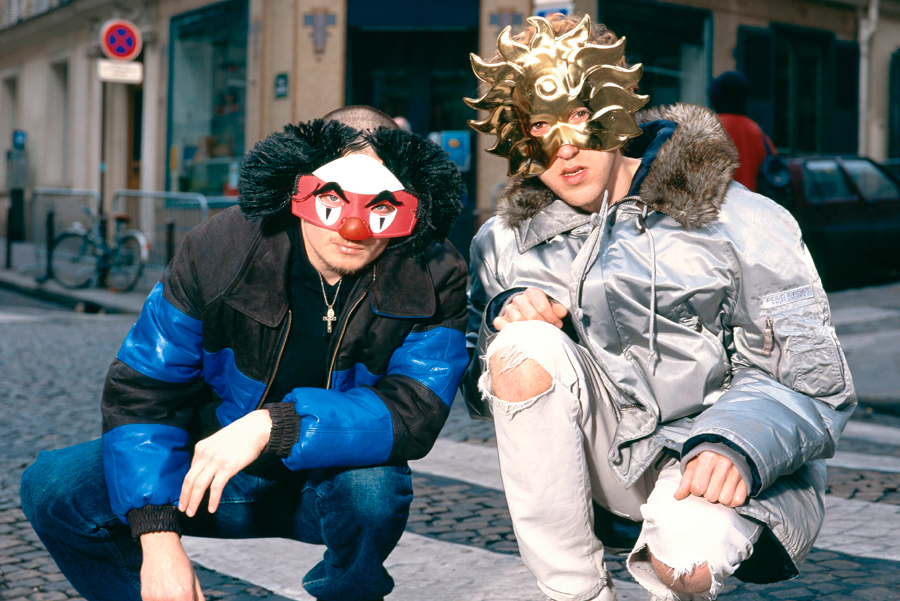

El dúo francés conformado
por Thomas Bangalter y Guy-Manuel
de
Homem-Christo se conoció en la escuela de
secundaria, Lycée Carnot, en París. Donde se hicieron buenos amigos y juntos participaron,
brevemente, en una banda llamada 'Darlin' en 1992 con
Laurent Brancowitz. Recibieron una dura crítica por parte de la revista Melody Maker sobre una
de sus
canciones, donde calificó a la agrupación de «A bunch of daft punk». Sin embargo, en vez de
ignorarla, lo encontraron interesante.
Después de lo sucedido, 'Darlin' se desintegró dejando oportunidades a Brancowitz de estar con
Phoenix; mientras que Bangalter y Homen-Christo hicieron leyenda con Daft Punk.
Homework

'Homework', es el álbum de estudio que marca el inicio
oficial de
la carrera musical de Duft Punk en 1997, donde llegaron a la escena de la música dance con "Around
the World".
Durante la era ‘Homework’, el dúo normalmente usaba máscaras para ocultar su apariencia. Cuando
no
usaban disfraces, preferían ser remplazados por animación o tener la cara oscurecida
digitalmente
por la prensa. Muy pocas fotos oficiales del dúo existen, incluyendo una borrosa que se
encuentra en
las notas de 'Homework'.
Discovery
El 2001, es el año en que se publica su segundo álbum de
estudio,
'Discovery'; y que, además, usaron por primera vez los cascos de robots que hasta hoy los
conocemos.
En este álbum, los clásicos como "One More Time", "Digital Love" y "Harder, Better, Faster,
Stronger" lograron el éxito mundial. El álbum llegó al
puesto dos en el Reino Unido y el sencillo, "One More Time" fue un éxito de talla mayor, casi
llegando al primer lugar del UK Singles Chart.
A su fiel estilo experimental, en el 2003 crearon Interstella
5555 un largometraje animado en el
estudio japonés Toei Animation. El material fue producido por ellos mismos, se trata de la
realización en vídeo del 'Discovery'.
La trama relata sobre una banda pop extraterrestre que es secuestrada por los humanos para
obligarla
a tocar en la tierra. Cada canción del álbum se animó como un episodio en la historia del
secuestro
y rescate de los extraterrestres. No tiene diálogos y cuenta con ligeros efectos sonoros, tales
como
disparos y llantas de vehículos
Random Access Memories
En el 2013 lanzaron su cuarto y último álbum, 'Random Access
Memories', en el cual podemos oír bases de la música estadounidense de
los 70 y 80. El álbum fue grabado con orquesta en vivo, usaron de manera
limitada máquinas de percusión, un sintetizador modular y antiguos vocoders de época. Esto
explica
el porqué del sonido natural que nos transporta a la década dorada de la música disco.
El álbum contiene un gran número de colaboradores, como:
Panda
Bear, Chilly Gonzales, DJ Falcon, Julian Casablancas, Todd Edwards, Paul Williams, Pharrell
Williams
y Nile Rodgers, líder de Chic, grupo esencial de la explosión disco de finales de los
setenta. Los dos últimos colaboraron en el hit mundial, "Get Lucky"; sencillo que les dio el mayor
éxito de su carrera ganando dos Grammys en el 2014.
Despedida
Con su despedida se pierde a uno de los grupos más
influyentes de
los últimos años, capaz de romper las barreras entre la electrónica y el pop. Daft
Punk ha marcado a
una generación entera y lo sigue haciendo con las más actuales, ha roto paradigmas de la música
purista, y ha sido aceptada por todos. Bangalter y Homem-Christo son de esos artistas que con su
arte nos logra transportar a las épocas doradas de la música sin salir de nuestra era actual.
Nos
hace viajar al espacio estelar, sin salir de la Tierra.